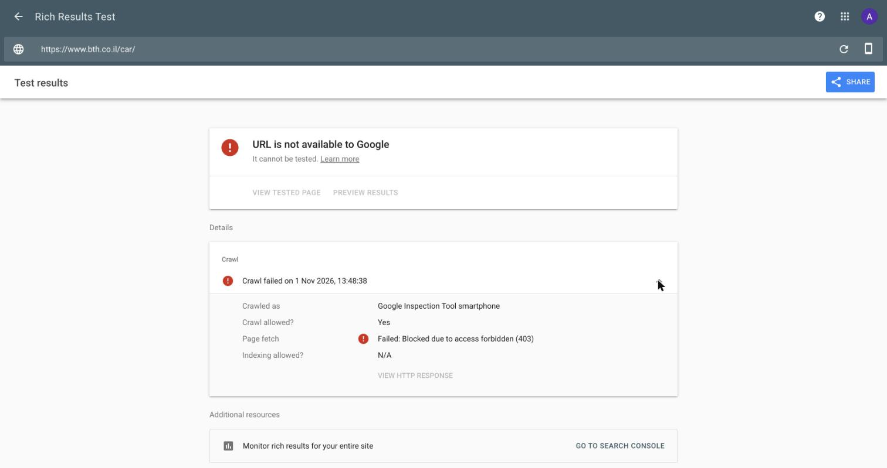

גם direct.bth.co.il עובר דרך Imperva (כאתר נפרד עם הגדרות משלו), ובבדיקה של גוגל הוא נסרק בהצלחה באותן דקות. ב-www.bth.co.il יש בנוסף שכבת F5. לכן ההשוואה בין ההגדרות של שני האתרים, ב-Imperva וב-F5, היא נקודת התחלה טובה. גם קובץ PDF מהאתר, שהשרת מגיש בלי לעבור דרך וורדפרס, מחזיר לגוגל 403, ולכן החסימה נמצאת בשרת או בשכבות ההגנה שלפניו, ולא בוורדפרס.
להריץ את בדיקת התוצאות העשירות של גוגל על https://www.bth.co.il/ ועל https://www.bth.co.il/car/. התוצאה התקינה היא Crawled successfully, כמו שמופיע היום ל-direct.bth.co.il. היום מופיע שם Failed: Blocked due to access forbidden (403).
בדיקה מהדפדפן, או עם User-Agent של Googlebot מהמשרד, לא תראה את הבעיה: בבדיקה כזו מהרשת שלנו האתר החזיר 200. מה שהסורק מקבל רואים בבדיקה שגוגל מריץ מהשרתים שלו, או ביומני Imperva ו-F5.
URL Inspection, ללחוץ Request indexing לעשרה עמודים: שמונת העמודים שהביאו הכי הרבה קליקים בספטמבר, ועמודי ביטוח הדירה וביטוח צד ג': https://www.bth.co.il/ https://www.bth.co.il/contact-us/ https://www.bth.co.il/car/ https://www.bth.co.il/info/ https://www.bth.co.il/abroad/ https://www.bth.co.il/insurance-check/ https://www.bth.co.il/kibutz-equipment/ https://www.bth.co.il/forms/ https://www.bth.co.il/house/ https://www.bth.co.il/car-tzad-gimel/https://www.bth.co.il/sitemap.xml.Settings > Crawl stats, בפילוח לפי תגובה (By response), לוודא שתגובות 403 ירדו לאפס.עם הגישה נעקוב כל יום אחרי החזרה של העמודים לתוצאות ונראה מיד אם החסימה חוזרת.
להשאיר את הסורקים המאומתים של גוגל ובינג ברשימת ההיתרים באופן קבוע, ולהריץ את הבדיקה מפעולה 2 אחרי כל שינוי בכללים של Imperva או F5.
| בדיקה (1.11.2026) | תוצאה |
|---|---|
בדיקת גוגל לדף הבית ול-/car/, 13:48-13:49 | Page fetch: Failed: Blocked due to access forbidden (403). בשורה Crawl allowed? מופיע Yes, כלומר robots.txt לא חוסם. |
| אותה בדיקה ל-direct.bth.co.il, 13:50 | נסרק בהצלחה. |
אותה בדיקה לקובץ PDF מתיקיית /wp-content/uploads/, 14:03 | Blocked due to access forbidden (403). הקובץ מוגש מהשרת בלי לעבור דרך וורדפרס, כך שהחסימה היא לפני וורדפרס. |
חיפוש site:www.bth.co.il בגוגל, 14:02 | כל 51 התוצאות שגוגל הציג הן קובצי PDF. אף עמוד אינטרנט של האתר לא מופיע. |
שליפה כ-Bingbot (Bing Webmaster) לדף הבית, ל-/car/ ול-/house/, 13:59-14:01 | השליפה נכשלה ב-3 העמודים. אותו כלי שלף את direct.bth.co.il בהצלחה (200). |
גלישה רגילה לדף הבית, /car/, /house/, /abroad/, /home-content/, /car-hova/ | כל העמודים נטענים (200), בלי noindex, וה-canonical מצביע על העמוד עצמו. |
User-Agent של Googlebot מהרשת שלנו ל-/car/ | העמוד נטען (200). החסימה לא מבוססת על ה-User-Agent, אלא על זיהוי הסורק האמיתי (כתובת IP או זיהוי בוטים). |
| Bing Webmaster, שגיאות 4xx בסריקה ביום | בין 24 ל-39 ביום בכל אחד מהימים 1.10-21.10, ואחר כך 48 ב-22.10, 143 ב-23.10, 277 ב-25.10, 561 ב-29.10. |

/car/, 1.11.2026 13:48מילות המפתח במעקב היומי (99 מילים, גוגל ישראל) שמופיעות ב-100 התוצאות הראשונות עם עמוד מ-www.bth.co.il:
| תאריך | מחשב: ב-100 הראשונות | מחשב: ב-10 הראשונות | נייד: ב-100 הראשונות | נייד: ב-10 הראשונות |
|---|---|---|---|---|
| 23.10 | 29 | 12 | 30 | 11 |
| 24.10 | 18 | 10 | 26 | 11 |
| 25.10 | 10 | 5 | 11 | 7 |
| 27.10 | 7 | 3 | 7 | 3 |
| 30.10 | 2 | 1 | 2 | 1 |
| 1.11 | 2 | 0 | 4 | 2 |
מילים מרכזיות, מיקום ב-23.10 ומיקום ב-1.11:
| מילת מפתח | חיפושים בחודש | מחשב 23.10 | מחשב 1.11 | נייד 23.10 | נייד 1.11 |
|---|---|---|---|---|---|
| ביטוח רכב | 27,100 | 12 | לא ב-100 הראשונות | 14 | לא ב-100 הראשונות |
| ביטוח לרכב | 5,400 | 16 | לא ב-100 הראשונות | 17 | לא ב-100 הראשונות |
| ביטוח חול | 4,400 | 12 | לא ב-100 הראשונות | 12 | לא ב-100 הראשונות |
| ביטוחי רכב | 1,100 | 19 | לא ב-100 הראשונות | 19 | לא ב-100 הראשונות |
| ביטוח צד ג | 1,000 | 13 | לא ב-100 הראשונות | 12 | לא ב-100 הראשונות |
| ביטוח עסק | 590 | 8 | לא ב-100 הראשונות | 8 | לא ב-100 הראשונות |
| ביטוח תכולת דירה | 590 | 10 | לא ב-100 הראשונות | 10 | לא ב-100 הראשונות |
חיפוש שם החברה "ביטוח חקלאי" (4,400 חיפושים בחודש): בבדיקה חיה בגוגל במחשב ב-1.11 דף הבית לא מופיע ב-100 התוצאות הראשונות, ובמקום הראשון מופיע האזור האישי myinfo.bth.co.il. גם בנייד מוצג שם האזור האישי במקום דף הבית מאז 25.10.